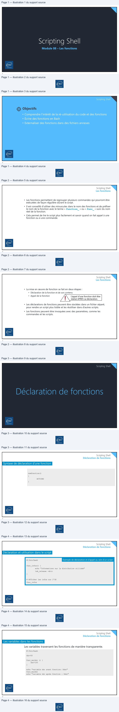
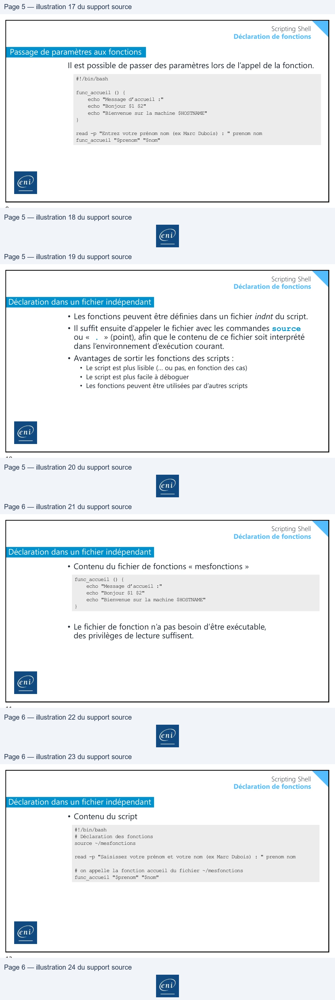

Transcription du document du Drive TSSR. La mise en forme est adaptée au Web ; les compléments IA du portail sont présentés séparément.
Module 08 – Les fonctions
1
Scripting Shell
Objectifs
• Comprendre l'intérêt de la ré-utilisation du code et des fonctions
• Écrire des fonctions en Bash
• Externaliser des fonctions dans des fichiers annexes
2
Scripting Shell
Les fonctions
• Les fonctions permettent de regrouper plusieurs commandes qui pourront être
exécutées de façon régulière durant le script.
• Il est conseillé d’utiliser des minuscules dans le nom des fonctions et de préfixer le nom de la fonction avec le terme « function_ » ou « func_ » suivi du nom réel de la fonction.
• Cela permet de lire le script plus facilement et savoir quand on fait appel à une
fonction ou à une commande.
3
Scripting Shell
Les fonctions
• La mise en œuvre de fonction se fait en deux étapes :
• Déclaration de la fonction et de son contenu
• Appel de la fonction
L’appel d’une fonction doit être
réalisé APRÈS sa déclaration.
• Les déclarations de fonctions peuvent être stockées dans un fichier séparé,
pour rendre un script plus lisible et les réutiliser dans d’autres scripts.
• Les fonctions peuvent être invoquées avec des paramètres, comme les
commandes et les scripts.
4
Scripting Shell
5
Scripting Shell
Déclaration de fonctions
Syntaxe de déclaration d’une fonction
nomfonction()
{
ACTIONS }
6
A
Scripting Shell
Déclaration de fonctions
Déclaration et utilisation dans le script
Exemple de déclaration et d’appel au sein d’un script
#!/bin/bash
func_infos() {
echo "Informations sur la distribution utilisée" lsb_release -dric }
# Afficher les infos sur l’OS func_infos
7
Scripting Shell
Déclaration de fonctions
Les variables dans les fonctions
Les variables traversent les fonctions de manière transparente.
#!/bin/bash
nbr=50
func_majnbr () {
nbr=100 }
echo "variable nbr avant fonction: $nbr" func_majnbr echo "variable nbr après fonction : $nbr"
8

Scripting Shell
Déclaration de fonctions
Passage de paramètres aux fonctions
Il est possible de passer des paramètres lors de l’appel de la fonction.
#!/bin/bash
func_accueil () {
echo "Message d’accueil :" echo "Bonjour $1 $2" echo "Bienvenue sur la machine $HOSTNAME" }
read -p "Entrez votre prénom nom (ex Marc Dubois) : " prenom nom func_accueil "$prenom" "$nom"
9
Scripting Shell
Déclaration de fonctions
Déclaration dans un fichier indépendant
• Les fonctions peuvent être définies dans un fichier indnt du script. • Il suffit ensuite d’appeler le fichier avec les commandes source ou « . » (point), afin que le contenu de ce fichier soit interprété dans l’environnement d’exécution courant. • Avantages de sortir les fonctions des scripts : • Le script est plus lisible (… ou pas, en fonction des cas) • Le script est plus facile à déboguer • Les fonctions peuvent être utilisées par d’autres scripts
10
Scripting Shell
Déclaration de fonctions
Déclaration dans un fichier indépendant
• Contenu du fichier de fonctions « mesfonctions »
func_accueil () {
echo "Message d’accueil :" echo "Bonjour $1 $2" echo "Bienvenue sur la machine $HOSTNAME" }
• Le fichier de fonction n’a pas besoin d’être exécutable,
des privilèges de lecture suffisent.
11
Scripting Shell
Déclaration de fonctions
Déclaration dans un fichier indépendant
• Contenu du script
#!/bin/bash # Déclaration des fonctions source ~/mesfonctions
read -p "Saisissez votre prénom et votre nom (ex Marc Dubois) : " prenom nom
# on appelle la fonction accueil du fichier ~/mesfonctions func_accueil "$prenom" "$nom"
12
